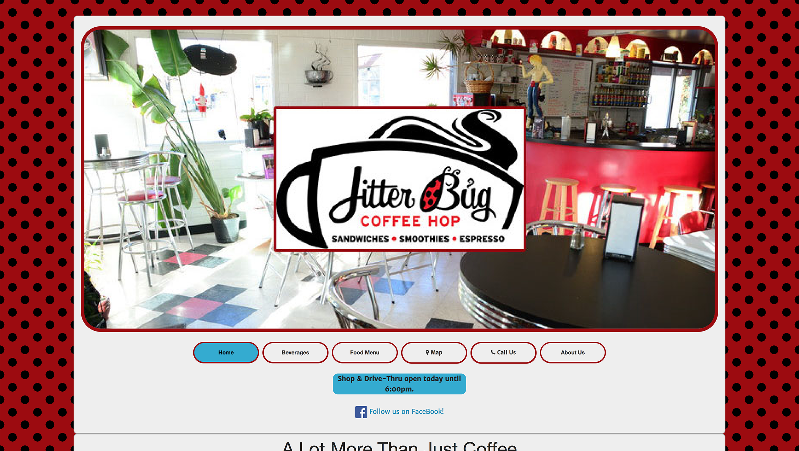
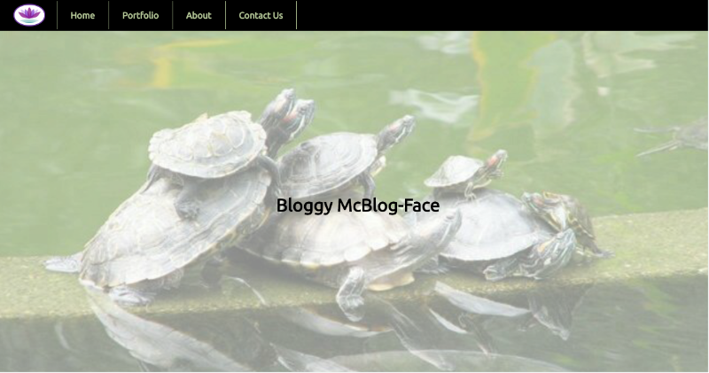

Code, Contacts, & Social Media
Featured Projects
Some of my favorite projects. See more projects at my GitHub Profile.
-
Jitterbug Coffee Hop
Summary: Site upgrade for local coffee shop.
Tech stack: HTML5, CSS3, AngularJS, Zurb Foundation.
Code Repo Live Site -
Front End Engineering Final Project

Summary: (Presently failing) A Web App for Massage Therapists who want a web presence with a blog and a secure scheduling and client management system.
Tech stack: HTML5, CSS3, FlexBox, ReactJS, Firebase, SASS, webpack, Heroku
Code Repo Live Site -
React-Firebase Blog Project (Coding Bootcamp)
Summary: Coding bootcamp assignment using ReactJS, Firebase, Heroku, etc.
Tech stack: HTML5, CSS3, FlexBox, ReactJS, Firebase, SASS, webpack, Heroku
Code Repo Live Site -
Queer Continuum Conference (Utah Pride Center)

Summary: Responsive site for the annual Utah Pride Center Conference on Queer and Bisexual Identities
Tech stack: HTML5, CSS3, AngularJS, Zurb Foundation
Code Repo Live Site